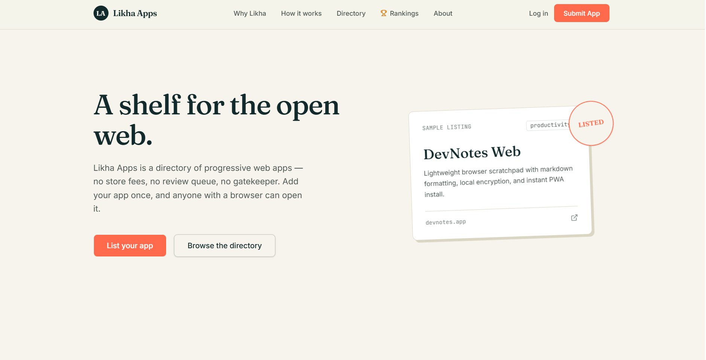
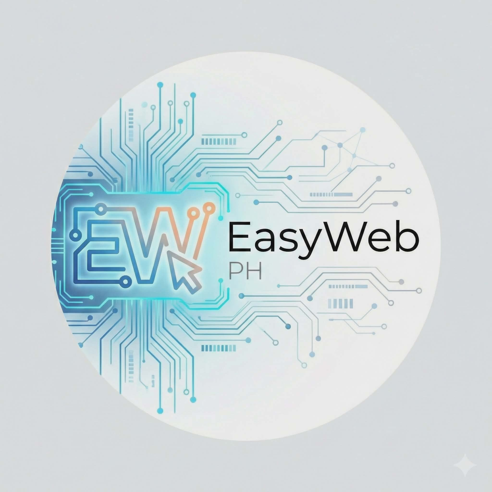
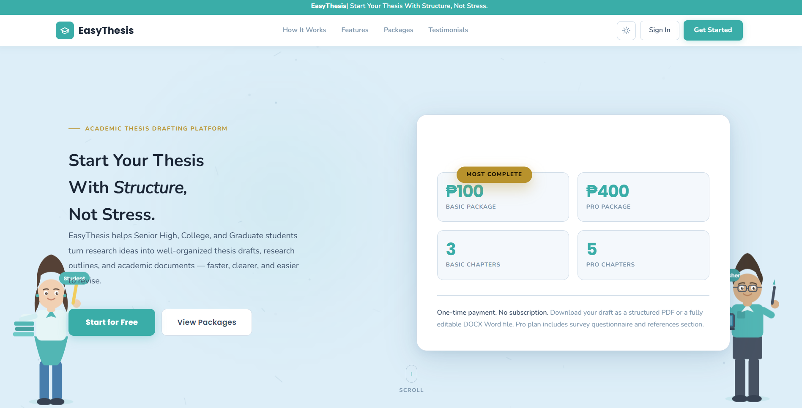
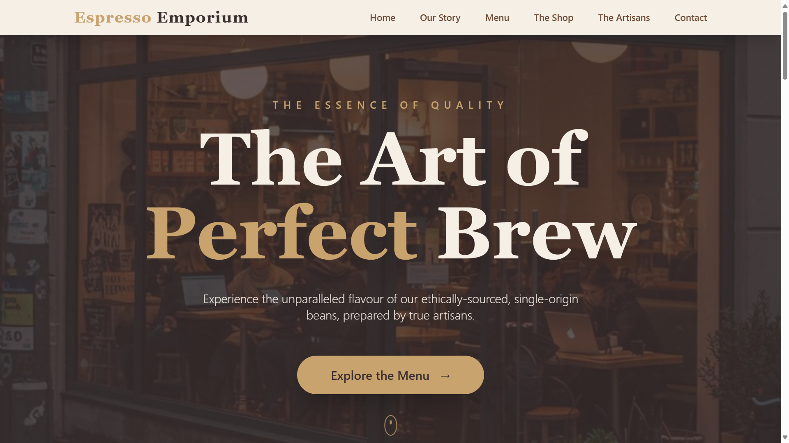
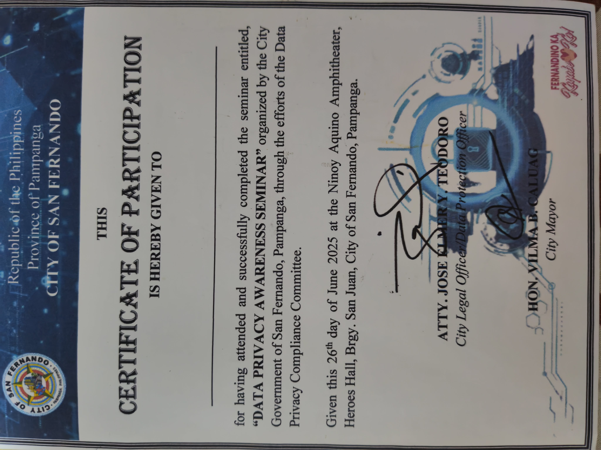
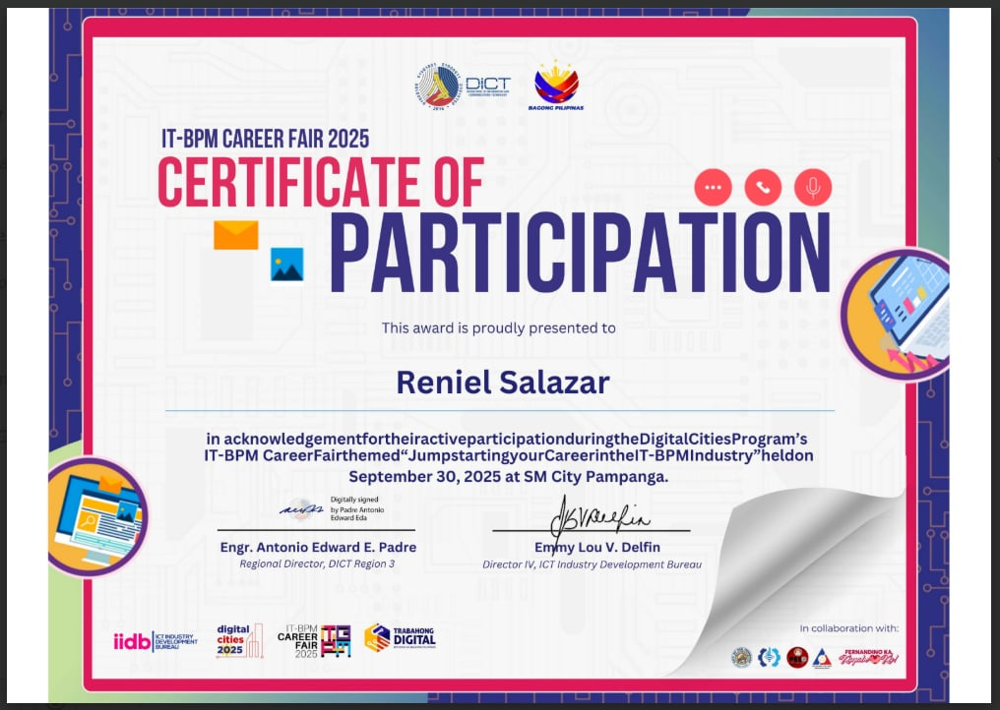

I build digital systems made for real people.
Web Developer at City Health Office (CHO) and Founder & CEO of EasyWeb PH. I design and engineer practical web applications, cloud backends, and hardware-integrated IoT systems with a focus on simplicity, speed, and dependability.
Featured Work
View All Projects
Likha Apps
A progressive web app directory and discovery shelf designed to list, search, and launch web applications on the open web without app store barriers.
Tipid App
A personal finance and daily expense tracking web application with offline support, budgeting calculators, and financial visualization tools.
Working on the development and enhancement of a new system from the ground up. The initial data-gathering phase has been completed, and the project is now progressing into organizing and defining the system workflow.
Have a system or product idea in mind?
I collaborate with founders, businesses, and government teams to build reliable web platforms, internal systems, and digital products.
About Me
A full-stack software engineer and startup founder dedicated to robust architectures and clean execution.
Background & Philosophy
I am currently working as a Web Developer at City Health Office (CHO), focusing on the development and enhancement of a new system from the ground up through ongoing workflow organization. Alongside my professional role, I am the Founder & CEO of EasyWeb PH, an independent digital technology agency.
I build practical software solutions by uniting hardware logic and modern web frameworks. My background spans backend system engineering, scalable REST API gateways, responsive frontend interfaces, and embedded microcontroller systems.
Whether engineering custom daily time-tracking software, deploying an AI-assisted thesis drafting tool, or writing C++ firmware for sensor arrays, I focus on clean maintainability, secure database standards, and seamless user interaction.
What I Deliver
Engineering capabilities designed to help startups, enterprises, and local businesses build scalable technology.
Web Application Engineering
End-to-end custom web applications built for reliability, clean data flow, and responsive presentation across devices.
UI / UX & Frontend Design
Human-centered user interfaces built with responsive layouts, accessible controls, and seamless animations.
API Gateways & Integration
Designing robust, versioned REST API architectures, authentication systems, and third-party webhook integrations.
IoT & Embedded Systems
Writing custom C++ logic for microcontrollers, sensor data relays, and real-time physical-to-cloud interfaces.
Cloud Deployments & DevOps
Deploying web applications to modern cloud hosting platforms with continuous integration and automated pipelines.
Database Architecture
Relational and document schema modeling, query optimization, indexing, and data security standards.
Engineering Lifecycle
A structured, four-phase delivery process guaranteeing clarity and quality.
Discovery
Mapping requirements, user goals, and core system constraints before writing code.
Architecture
Designing database schemas, API contracts, security models, and layout wireframes.
Engineering
Developing clean, modular code with regular milestone demos and client communication.
Deploy & Scale
Rigorous cross-device testing, cloud deployment, telemetry monitoring, and support.
Selected Projects
Production web applications, digital products, and systems shipped for clients and enterprise users.
Likha Apps (PWA Storeapp)
A progressive web app directory and discovery shelf designed to list, search, and launch web applications on the open web without app store barriers.
Tipid App
A personal finance and daily expense tracking web application with offline support, budgeting calculators, and financial visualization tools.

EasyWeb PH
A premium digital agency platform presenting custom web development, UI/UX architecture, and cloud deployment services.

EasyThesis Solution
An AI-assisted academic writing tool built to help undergraduate researchers structure thesis drafts and organize literature sources.
Custom DTR
A custom daily time record interface built for cleaner staff attendance management, structured logs, and reporting.
SmartBasura
A hardware-integrated waste management platform with automated ultrasonic bin tracking, QR logistics, and an administrative dispatch dashboard.

CoffeeShop
A polished coffee shop landing page focused on product presentation, menu discovery, and mobile-friendly brand atmosphere.
Renz.dev
A personal developer showcase highlighting technical identity, past implementations, and direct communication channels.
KimarkEngr Portfolio
An engineering portfolio designed to showcase professional project credentials, blueprints, and engineering consultations.
Jancher Portfolio
A clean professional portfolio layout designed for profile visibility, past project showcases, and contact conversion.
Reynataladro HMUA
A bridal and event makeup artist portfolio showcasing visual transformations, package pricing, and booking contact flows.
INC AOFLAH
A community portal designed for event coordination, announcements, activity schedules, and institutional identity.
Bloom Bites
An artisanal pastry and cake showcase website presenting product menus, pricing tiers, and direct ordering inquiries.
Tech Stack & Tools
Languages, libraries, databases, and embedded tools utilized in production environments.
Credentials & Recognition
Formal certifications, institutional placements, and milestones attained in software development.
DTI Region 3 Engineering Intern
Selected for a competitive 486-hour government software placement optimizing regional digital services.
Founder & CEO — EasyWeb PH
Registered commercial digital technology startup under DTI, delivering web architectures and IT consultations.
BSIT Graduate — City College SF
Completed curriculum specializing in systems architecture, database management, and embedded IoT computing.
IoT Systems Lead — SmartBasura
Architected and shipped an end-to-end IoT waste management solution combining ultrasonic sensors and cloud APIs.
Freelance Developer — Pampanga SMEs
Delivered commercial websites and database utilities for local enterprises prior to formal degree completion.
Security-First Engineering Practice
All production platforms conform to strict authentication standards, input sanitation, and OWASP recommendations.
Developer Communities
Active participation in Filipino developer networks and tech communities.
Milestones & Gallery
A curated photographic archive of academic achievements, technical demonstrations, and project moments.


Career Experience
A chronological progression of engineering placements, entrepreneurial venture, and education.
Web Developer
Working on the development and enhancement of a new system from the ground up. The initial data-gathering phase has been completed, and the project is now progressing into organizing and defining the system workflow.
- Completed the initial data-gathering phase.
- Currently organizing and defining the system workflow.
- Preparing the foundation for system development and future enhancements.
Software Engineering Intern (486 Hours)
Executing a 486-hour government engineering placement focused on digitizing internal workflows, automating tracking documents, and improving municipal service software.
Founder & Chief Executive Officer
Founded and registered an independent digital agency providing custom full-stack web applications, business landing sites, and cloud database architectures for Philippine companies.
Bachelor of Science in Information Technology
Specialized in systems architecture, advanced database management, network algorithms, and embedded IoT development. Led the SmartBasura capstone engineering team.
Freelance Web Developer
Designed and deployed responsive websites and lightweight administrative interfaces for local Pampanga retail businesses and professional practices.
Client & Peer Testimonials
Observations from collaborators, academic advisers, and clients who have evaluated the work first-hand.
"Renniel delivered a complete web platform ahead of schedule. His attention to backend security, clean database design, and API architecture was exactly what our business needed."
"His IoT system for SmartBasura was genuinely impressive — real-time sensor data flowing cleanly to our dashboard. The firmware was rock-solid from day one of evaluation."
"As a co-intern at DTI Region 3, I watched Renniel solve complex workflow problems with elegant code. He's one of those rare developers who thinks in systems and executes cleanly."
Get in Touch
Available for technical consultations, full-stack software development, and new client partnerships.
Ready to Build Your Next Digital System?
Currently working as Web Developer at City Health Office (CHO) and leading EasyWeb PH. I partner with businesses, startups, and institutions to engineer dependable web platforms, databases, and responsive frontends.
Let's Build Something Dependable
Whether planning a new custom web portal, integrating external APIs, or seeking an engineering partner for your organization, feel free to reach out directly via email.
Send an EmailVerified Channels & Roles
Frequently Asked Questions
Key details regarding project engagements, delivery, and post-launch maintenance.